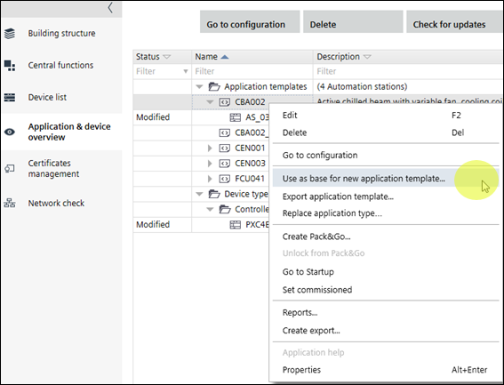

拆分应用程序模板
拆分现有应用程序模板将根据所选自动化站生成新的应用程序模板。通过拆分应用程序模板，您可以添加具有不同配置的新自动化站。

Split an application template
- An application template containing automation stations is created.
- Open Building > Application & device overview.
- Select at least one automation station of the application template that you want to split.
- Right-click and select Use as base for new application template.
- A copy of the application template is created and added to the project.
- The created application template opens in Configuration > Application Configuration where you can configure the parameters of the template.
- Configure the application template.
Configuring features (template)
- You have split an application template.

拆分应用程序模板不会影响建筑结构。建筑结构中的自动化站没有改变或移动。